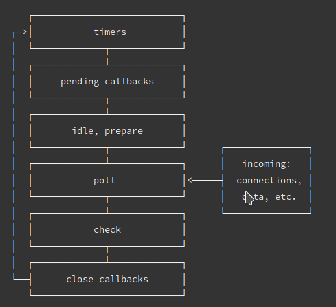

浏览器和 Node 中的事件循环有什么区别？
参考答案
浏览器
关于微任务和宏任务在浏览器的执行顺序是这样的：
- 执行一只task（宏任务）
- 执行完micro-task队列 （微任务）
如此循环往复下去
常见的 task（宏任务） 比如：setTimeout、setInterval、script（整体代码）、 I/O 操作、UI 渲染等。<br>常见的 micro-task 比如: new Promise().then(回调)、MutationObserver(html5新特性) 等。
Node
Node的事件循环是libuv实现的，引用一张官网的图：

大体的task（宏任务）执行顺序是这样的：
- timers 定时器：本阶段执行已经安排的 setTimeout() 和 setInterval() 的回调函数。
- pending callbacks待定回调：执行延迟到下一个循环迭代的 I/O 回调。
- idle, prepare：仅系统内部使用。
- poll 轮询：检索新的 I/O 事件;执行与 I/O 相关的回调（几乎所有情况下，除了关闭的回调函数，它们由计时器 setImmediate() 排定的之外），其余情况 node 将在此处阻塞。
- check 检测：setImmediate() 回调函数在这里执行。
- close callbacks 关闭的回调函数：一些准备关闭的回调函数，如：socket.on('close', ...)。
微任务和宏任务在Node的执行顺序
Node 10 及以前：
- 执行完一个阶段的所有任务
- 执行完nextTick队列里面的内容
- 然后执行完微任务队列的内容
Node 11以后：<br>和浏览器的行为统一了，都是每执行一个宏任务就执行完微任务队列。
作答思路：
在浏览器中，事件循环是单线程的，包括渲染线程和事件触发线程。事件被添加到事件队列中，然后按照优先级被渲染线程处理。而在Node.js中，事件循环是多线程的，包括主事件循环和I/O事件循环。主事件循环负责执行同步代码，而I/O事件循环则处理异步I/O操作。
考察要点：
- 浏览器事件循环：理解浏览器中事件循环的基本原理，包括渲染线程和事件触发线程的作用。
- Node.js事件循环：理解Node.js中事件循环的特点，包括主事件循环和I/O事件循环的作用。
- 线程模型差异：理解浏览器和Node.js在事件循环方面线程模型的差异，以及这些差异如何影响编程模型。